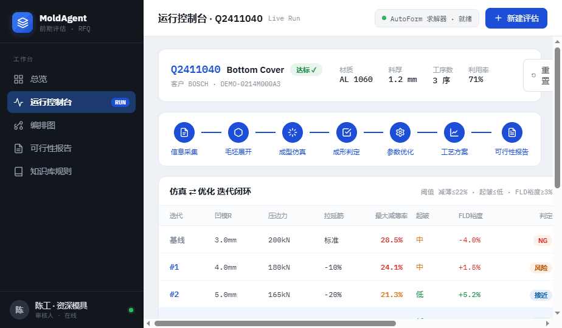
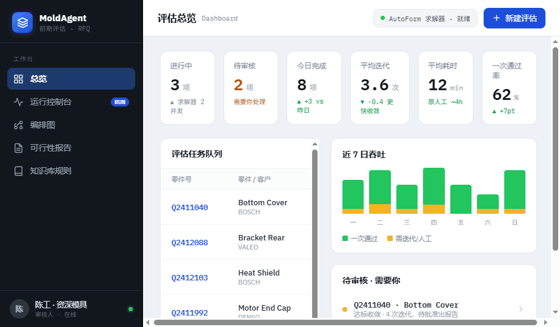
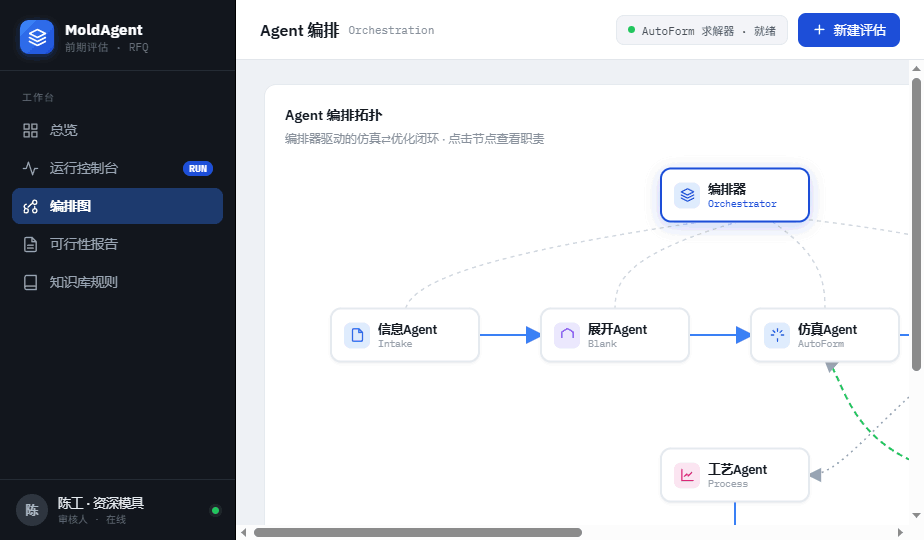
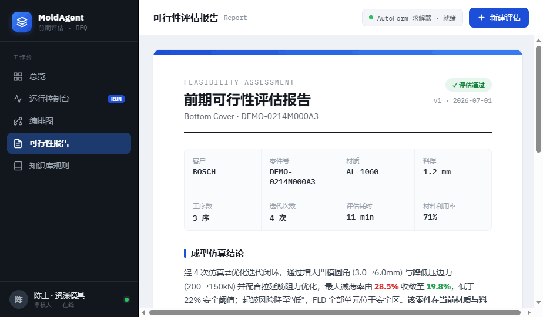
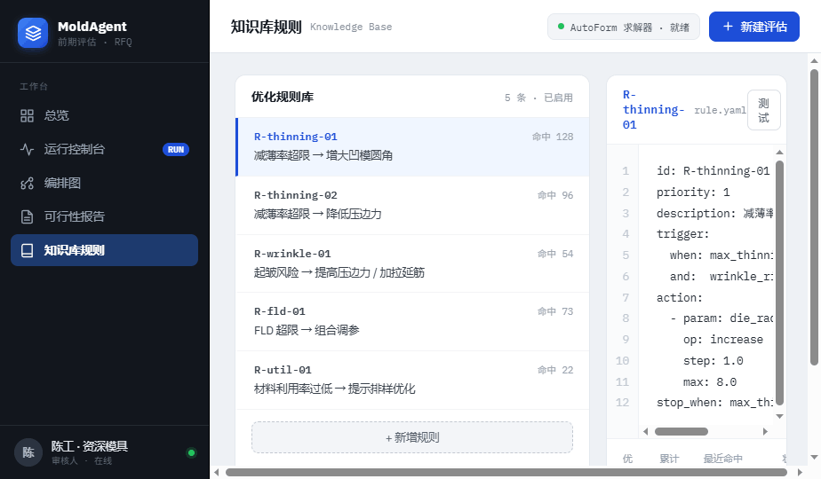

界面结构、功能项清单，以及与后端对接的接入指南。
本 UI 是"冲压模具前期评估 (RFQ 阶段)"辅助 Agent 系统的操作与监控前端。系统把资深工程师在 AutoForm 中手工完成的「展开 → 成型仿真 → 数模优化 → 出可行性报告」闭环，交给一组 Agent 半自动执行；工程师从"执行者"转变为"审核者"。UI 的职责是：驱动评估任务、实时观测仿真⇄优化闭环、在关键节点提供人工审核关卡，并交付可行性报告。
单文件交付 模具Agent控制台.dc.html，浏览器可直接打开。当前所有数据为内置示例数据 (mock)，闭环由前端定时器模拟；对接后端后，这些 mock 将被真实接口/事件流替换（见 §7）。
左侧固定导航切换五个主视图；顶栏显示当前上下文、求解器状态与"新建评估"入口。五个视图与后端概念的对应关系如下：
| 视图 | 作用 | 主要后端来源 |
|---|---|---|
| 运行控制台 | 单任务的仿真⇄优化闭环实时监控 + 人工审核 | 任务状态 · 迭代序列 · 事件流 |
| 总览 | 全部评估任务队列、吞吐与待审清单 | 任务列表 · 统计聚合 |
| 编排图 | Agent 拓扑与闭环数据流可视化 | 编排拓扑 (可静态) |
| 可行性报告 | 最终生成的评估报告，供审核与交付 | 报告文档 |
| 知识库规则 | 优化规则 (YAML) 浏览与编辑 | 规则库 CRUD |

这是系统的主工作面，围绕单个评估任务组织。功能项：

6 张 KPI 卡（进行中 / 待审核 / 今日完成 / 平均迭代 / 平均耗时 / 一次通过率）；评估任务队列表（零件、材质料厚、迭代次数、耗时、进度条、状态徽标，点击进入控制台）；吞吐柱状图（一次通过 vs 需迭代）；"待审核·需要你"清单。

拓扑节点：编排器 (Orchestrator) 控制其余节点；信息 → 展开 → 仿真 → 判定 → 优化（NG 回环至仿真）→ 工艺 → 报告。点击节点，右侧显示该 Agent 的职责、输入/输出与依赖工具。真实系统由 LangGraph 编排。

报告结构对应后端报告文档：封面（客户/零件/判定/版本）、关键参数栅格、成型仿真结论、量化指标卡、推荐工序方案、风险与建议、人工审核签署栏。

左侧列出优化规则（编号、命中次数、描述）；右侧显示选中规则的 YAML（trigger 条件 + action 动作 + 优先级），带保存/测试入口。这些规则正是"优化Agent"在迭代中命中的策略来源。
整个 UI 是一个 Design Component（class Component）。所有渲染数据由 renderVals() 从两处产生：组件状态 state 与内置示例数据数组。对接后端 = 把这些示例数组换成接口数据、把模拟定时器换成真实事件流。
| 代码位置 | 含义 | 对接为 |
|---|---|---|
| this.JOBS | 任务队列示例 | 总览任务列表接口 |
| this.ITERS | 迭代序列（R/BHF/减薄/FLD…） | 任务迭代结果接口 |
| this.EVENTS | Agent 日志 + 阶段步进脚本 | 实时事件流 (WS/SSE) |
| this.RULES | 知识库规则 + YAML | 规则库接口 |
| this.NODES | 编排拓扑与 Agent 职责 | 静态即可，或拓扑接口 |
| state.logIndex | 已播放到第几条事件 | 由事件流推进，而非定时器 |
| state.approved | HITL 审核结果 | 审批接口回写 |
| play() / pause() | 用 setInterval 模拟闭环推进 | 替换为订阅事件流 |
src/mold_agent/models.py 的实际定义为准，据此调整 UI 数据映射。| UI 显示项 | 推断后端字段 | 备注 |
|---|---|---|
| 最大减薄率 | max_thinning | 阈值 ≤ 0.22 |
| FLD 安全裕度 | fld_margin | 阈值 ≥ 0.03 |
| 起皱风险 | wrinkle_risk | 低/中/高 |
| 凹模圆角 R | die_radius | 优化可调参数 |
| 压边力 BHF | blank_holder_force | 优化可调参数 |
| 拉延筋 | draw_bead / restraint | 优化可调参数 |
| 判定 | verdict / status | NG/风险/接近/达标 |
| 任务基本信息 | customer · part_no · material · thickness | 来自信息Agent |
下列端点为建议契约，可按后端实际命名调整。重点是区分「一次性拉取」与「实时事件流」两类。
| 用途 | 建议端点 | 供给视图 |
|---|---|---|
| 任务列表 + 统计 | GET /api/jobs | 总览 |
| 新建评估任务 | POST /api/jobs | 顶栏「新建评估」 |
| 任务详情 + 迭代序列 | GET /api/jobs/{id} | 控制台 |
| 实时闭环事件流 | GET /api/jobs/{id}/stream (SSE/WS) | 控制台日志/步进/迭代 |
| 单迭代 FLD 数据 | GET /api/jobs/{id}/iters/{n}/fld | 控制台 FLD |
| 人工审核 (HITL) | POST /api/jobs/{id}/review | 审核关卡 |
| 可行性报告 | GET /api/jobs/{id}/report | 报告 |
| 规则库读写 | GET/PUT /api/rules | 知识库 |
控制台的日志、步进条与迭代表都由同一条事件流推进。后端 (LangGraph) 每完成一步应推送一个事件，前端据此 append 日志、更新阶段、追加迭代行。建议事件负载：
// SSE / WebSocket 消息
{
"type": "agent_step", // agent_step | iteration | verdict | need_review | report_ready
"ts": "2026-07-01T09:12:04Z",
"agent": "优化Agent", // → 日志行 agent
"stage": "optimize", // → 步进条高亮阶段
"iteration": 1, // → 当前迭代号
"message": "命中规则 R-thinning-01：凹模圆角 3.0→4.0mm",
"rule_hit": "R-thinning-01",
"params": { "die_radius": 4.0, "blank_holder_force": 180 },
"metrics": { "max_thinning": 0.241, "wrinkle_risk": "中", "fld_margin": 0.015 },
"verdict": "risk"
}
在组件的 componentDidMount 中订阅事件流，收到消息即 setState 追加数据，替代当前 play() 的定时器：
componentDidMount() {
const es = new EventSource(`/api/jobs/${this.jobId}/stream`);
es.onmessage = (e) => {
const ev = JSON.parse(e.data);
this.setState(s => ({
liveEvents: [...s.liveEvents, ev], // 日志 + 步进 + 迭代
approved: ev.type === 'report_ready' ? false : s.approved
}));
};
this._es = es;
}
componentWillUnmount() { this._es && this._es.close(); }
对应地：renderVals() 改为从 state.liveEvents（而非 this.EVENTS）派生日志行、步进状态与迭代表；「批准/打回」按钮的 onApprove/onReject 改为 POST /review 后再由流回推 report_ready。
models.py 校正 §6 字段名，冻结迭代/任务/规则的 JSON 结构。